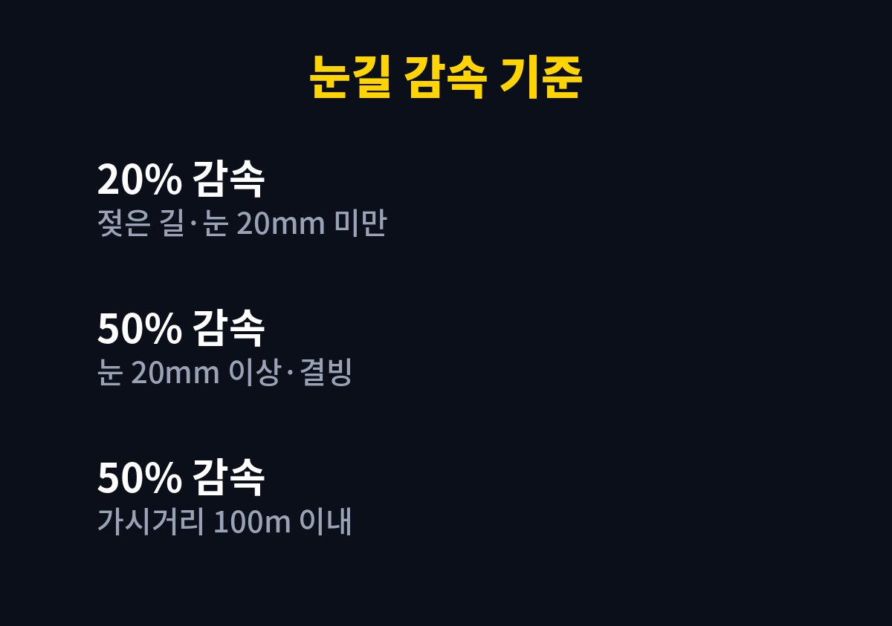
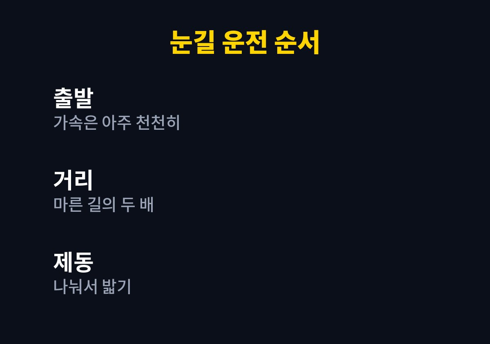

눈길 감속 기준은 도로교통법 시행규칙에 정해져 있고, 눈이 20mm 미만 쌓이면 최고속도의 20%, 20mm 이상이거나 노면이 얼었으면 50%를 줄여야 한다.
제한속도 100km/h 고속도로라면 각각 80km/h와 50km/h가 상한이 된다는 뜻이다.
숫자를 외우는 것보다 어려운 일은 지금 내 앞 노면이 어느 쪽에 해당하는지 판단하는 것이다.
도로에 적힌 제한속도는 마른 노면을 기준으로 정한 숫자다.
비나 눈, 결빙이 있으면 시행규칙 제19조에 따라 그 속도에서 다시 20% 또는 50%를 줄인 값이 실제 상한이 된다.
그래서 눈 오는 날 표지판 숫자에 맞춰 달리면 법 기준으로도 이미 빠른 상태다.
겨울용 타이어는 출발과 제동을 돕지만 감속 기준을 바꾸지는 않는다.
빙판에서는 겨울용 타이어도 마른 길보다 제동거리가 길게 나온다.
타이어를 바꾼 첫 겨울에 나도 출발이 수월해지자 속도를 조금씩 올리게 됐는데, 그 습관이 가장 위험하다고 느꼈다.
눈이 멈춘 뒤에도 녹았던 물이 밤사이 다시 얼면 노면이 얼어붙은 경우에 해당해 50% 감속 대상이 된다.
오히려 하늘이 맑은 다음 날 새벽이 더 미끄러운 경우가 많다.
젖은 아스팔트처럼 검게 보이는데 바퀴 소리가 갑자기 조용해지면 결빙을 먼저 의심한다.
도로교통법 시행규칙 제19조는 비·안개·눈 등으로 인한 악천후 때 최고속도를 줄여 운행하도록 정하고 있다.
한국도로공사도 겨울철 비·눈이 올 때 평소보다 20~50% 감속하라고 안내한다.
아래 표의 예시는 제한속도 100km/h 구간을 기준으로 계산했다.
| 노면 상태 | 감속 기준 | 100km/h 구간 상한 |
|---|---|---|
| 비가 내려 노면이 젖은 경우 | 최고속도의 20% | 80km/h |
| 눈이 20mm 미만 쌓인 경우 | 최고속도의 20% | 80km/h |
| 눈이 20mm 이상 쌓인 경우 | 최고속도의 50% | 50km/h |
| 노면이 얼어붙은 경우 | 최고속도의 50% | 50km/h |
| 폭설·안개로 가시거리 100m 이내 | 최고속도의 50% | 50km/h |
가변형 속도제한 표지가 설치된 구간에서는 그 표지에 뜬 숫자를 따른다.
20mm는 운전석에서 재기 어려우니 바퀴 자국 옆에 눈이 손가락 한 마디 정도 덮였다면 50% 쪽으로 판단하는 편이 낫다.

눈길 감속은 숫자를 맞추는 일이고, 미끄러지지 않게 하는 건 발과 손의 동작이다.
나는 눈 예보가 있는 날이면 아래 순서를 머릿속으로 한 번 짚고 출발한다.
ABS가 있는 차는 급제동 때 페달이 떨리는 느낌이 나는데 이는 정상 작동이다.
차종마다 주행 모드와 제동 보조 기능이 달라 눈길 모드 사용법은 차량 설명서에서 확인한다.

이런 곳은 눈이 거의 없어 보여도 눈길 감속 기준의 50% 구간으로 보고 지나간다.
터널 안은 마른 노면인데 출구를 나서는 순간 결빙이 이어지는 경우가 있다.
산을 끼고 도는 커브의 그늘진 쪽은 한낮에도 얼음이 남는다.
이런 곳은 눈이 거의 없어 보여도 50% 감속 구간으로 보고 지나간다.
솔직히 출퇴근길처럼 익숙한 길에서 이 판단이 가장 자주 무너진다.
눈이 예보된 날은 출발 전에 경찰청·한국도로공사의 도로 상황 안내로 결빙·통제 구간부터 확인한다.
길 상태가 판단되지 않을 만큼 눈이 쏟아지면 운전을 미루고 대중교통을 쓰는 것도 방법이다.
참고 자료: 국가법령정보센터 「도로교통법 시행규칙 제19조(자동차등과 노면전차의 속도)」(2026년 11월 확인) · 한국도로공사 「겨울철 비·눈 올 때 20~50% 감속 운행 안내」(2026년 11월 확인)
※ 2026년 기준 공공기관 안내를 바탕으로 정리한 글이며, 차종과 연식에 따라 기준이 다를 수 있어 차량 설명서와 공식 안내를 함께 확인하길 바란다.